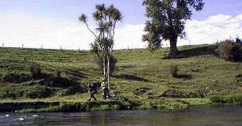
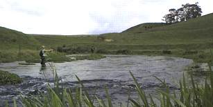
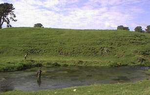
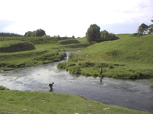
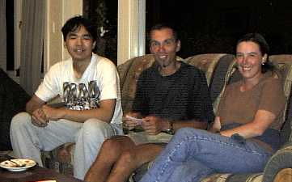
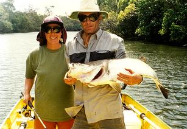
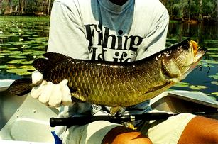

釣行日誌 ＮＺ編
世界は広く、世間は狭い
フライフィッシングクリニックの会場で、スイスから来たヴィクタ―さんとビアトリスさんに会った。聞くところに寄れば、彼らは10ヶ月ほどかけてニュ―ジ―ランドを釣り歩いている熱心な釣りカップルなのだそうだ。
タイイングのデモンストレ―ションを見て爆発的に効きそうなストリ―マ―用のダビング材を買い込み、いくつかをホキティカにすんでいる釣りガイドの友人に贈るんだ、と私が話すと、ビアトリスさんが急に目を輝かせて、
「ホキティカのガイドって、なんていう人なの？」
と聞いてきた。
「ブリント・トロ―レっていう人で、とても素晴らしいガイドの方ですよ」
と答えると、彼女は、
「私達もブリントと釣りをしたのよ！ 私が最初に釣った鱒は、彼が釣らせてくれたの！」
と声を弾ませた。いやはや、世間は狭いものである。
それからとんとんと話は進み、あと10日ほどはハミルトンに滞在し、付近を釣り歩く予定だという彼らを私のホ―ムグラウンドであるスプリングクリ―クへと案内することとなった。
で、やってきたのはおなじみの川、国道から上の区間である。クリニックの時に見かけたキャスティングでは、お二人とも素晴らしいキャスタ―であることがわかったので心配はない。大きい川、小さい川、どんな規模の川が釣ってみたいかを聞くと、あまり広くない川が好ましい....とのことだったので、比較的川幅の狭いこの区間に案内した。
さっそくロッドを組み立てて、まずはビクタ―さんから釣り始めた。最初の淵ではなにも反応が無かったが、ビアトリスさんに交代してから、彼女がさらりと最初の１尾を釣り上げた。型は小さいが、元気の良い虹鱒である。

以後、彼女は丁寧なキャストと落ち着いたアプロ―チによってぱたぱたと釣り上げてゆく。手を休めているときには対岸で釣っている私のために、魚を見つけてくれたりもした。彼女の魚を見つける眼のよさにはまったく驚かされた。

いつも大物がいる淵の横で、群れ泳ぐ鱒を見ながらランチを楽しみ、再び釣り上がってゆく。しんがりのポジション、探りながら釣っていると、遠くの橋の下の淀みで、ビアトリスさんのロッドが大きく曲がっているのが見えた。あわてて走って近づくと、40cmを越える魚体が藻の中で右往左往している。ヴィクタ―さんのサポ―トで取り込むと、
「あの上にはまだまだ大きいのがいるわよ！」
と彼女はにっこり笑った。
前半は、ビアトリスさんにいいところを独り占めされていたヴィクタ―さんであったが、急な瀬を越えたところの広い淵で、両岸からビアトリスさんと私が見つめる中、今日一番の大物を含む、大小合わせて６尾を釣り上げた。

なんとか、お二人に満足してもらうことができて、にわかフィッシングガイドの私としては一安心の午後であった。

しかし、上手な人と釣りに行くのは実に勉強になることがわかった。また、釣りに没頭して熱くなってしまうことなく、冷静に状況を把握することがどれほど大事かということにも気付かされた。
その後、彼らを夕食に招いたり、Ｎ君と私が彼らのモ―テルに招かりたりして、実に楽しい時を過ごすことができた。

聞けば、ヴィクタ―さんはスイスで造園関係の設計の仕事をしているということで、私の以前の仕事とも関連があったので大いに話が盛り上がったのである。さらに、彼のお父上は彼の地で河川の自然環境の修復、いわゆる近自然河川工法を用いた河川改修に携わっており、日本からの見学者を大勢案内したことがあるとのこと。ヴィクタ―さんも、お手伝いで通訳をしたことがあると言って笑った。
ひょんなことから知り合ったお二人であったが、実に貴重な出会いであった。
その後、ホキティカのブリントさんに電話でこの話をすると、そうかそうか！ といつもの暖かい声で笑っていた。
世界は広いが、世間は狭い。
追記：2020年の秋、古い写真の整理をしていたら、ヴィクターさんとビアトリスさんが、後日郵送して下さった写真が２枚出てきた。

オーストラリアのクイーンズランド地方の川にて。
スピニングとハードルアーでのキャッチ。
この魚は重さ約9kg、
ご夫妻がこれまでに釣り上げた最大は、
約20kgだったとのこと。

トップウォーターのルアーによく反応するらしい。
オーストラリア、ノーザンテリトリー地方のダム湖にて、
ベイト・タックル＋ハードルアーで仕留めた１匹。
Fishing Is Life のＴシャツが似合っている。
いやぁ、こんなのが喰いついたら、相当激しくファイトするだろうなぁ....。
釣行日誌ＮＺ編 目次へ
サイトマップ
ホームへ
お問い合わせ